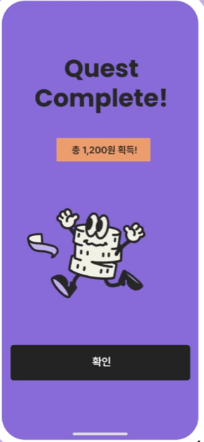

누가
초등 1~3학년에게 용돈을 주며 금융교육에 관심 있는 부모 30만 곳
초등 자녀가 금융을 배우고, 해보고, 달라지는 것을 보여주는 서비스

퀘스트를 마치면 총 1,200원 획득. 무엇을 알게 됐는지는 남지 않습니다
한국사 · 시사 · 어휘 · 과학기술 — 돈 이야기가 아닌 문제로 숫자가 올라갑니다
공부를 안 해도 숫자는 올라가는 구조입니다
중학교 선생님 정미경 씨 · 여덟 살 딸
주 8,000원 충전 · 다른 용돈앱 8개월 사용
그런데 “우리 애가 돈을 잘 쓰게 됐나”는
이 화면에서 알 수가 없습니다
퀴즈는 풀지만 생활로 넘어가지 않습니다
화면에 그 칸이 아예 없습니다
이 두 개가 저희가 푸는 문제 전부입니다.
가르치는 것과 행동을 바꾸는 것은 다른 문제입니다.
어디서 · 무슨 가게 · 얼마까지 · 무엇을
업종을 받아야 카드 승인 내역과 자동으로 맞춰집니다
🖊 문구 3,000원 ✔ 적은 대로
🍬 간식·음료 5,000원 ⚠ 적지 않았던 가게
합계 8,000원 → 3,000원 초과
나무 네 그루 + 진도율 + 정답률 → 아무것도 안 읽습니다
“별 세 개만 더 모으면 새 옷”
아이는 재미로 하고, 그 기록이 부모 화면으로 넘어갑니다
숫자를 해석할 필요가 없습니다 —
“벌기는 자랐고 모으기는 씨앗이네”가 바로 보입니다
안 쓰면 부모는 멈춘 걸 아이 탓으로 돌리거나 앱을 안 믿게 됩니다
별 46개를 모아 아이템 6개를 입혔습니다 — 아이 눈에는 이게 성장입니다
아이가 계획을 적는 비율 50% 이상 — 안 적으면 아무것도 안 걸립니다
별 개수가 틀리는 일 · 동의 전에 아이 화면이 열리는 일 · 아이 위치를 수집하는 일
←→ 이전 / 다음 장 · Space 다음
HomeEnd 처음 / 끝
O 제목 목차 (제목만 이어 읽기)
상단 목차의 구간 이름을 클릭하면 그 구간 첫 장으로 이동합니다.
N 발표 대본 켜기·끄기
T 타이머 시작·정지 R 초기화
F 전체화면 · P 인쇄(PDF)
전체 17장 · 목표 8분 15초 · 장당 15~45초
타이머는 목표 시간을 넘기면 빨갛게 바뀝니다.